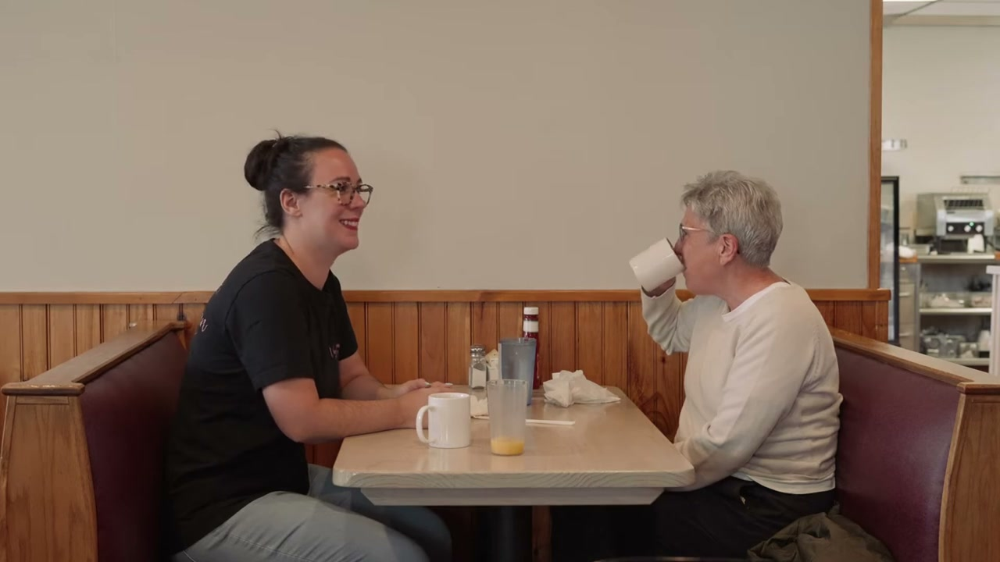

One community.
Three ways to connect.
Explore three working directions for the Adirondack Diversity Initiative. Each brings four programs, an event archive and public resources into a clear journey, with real photography and the same 30-second archive film.

A North Countryfor everyone.
01 / Immersive community
Full-width film. Green condensed headings, open program rows and a direct starting point.
Open working demowith connection.
02 / Open journal
A quieter editorial rhythm. Plum serif typography, a wide film and an expressive community mural.
Open working demo Belonging
Belonginggrows here.
03 / Civic editorial
A confident split composition. Oversized green type, a film alongside the message and clear routes to take part.
Open working demoTry the experience.
Open any direction. Explore program details, filter resources, search the dated event archive, and pause or seek the film. Each layout adapts to desktop, tablet and mobile.
Private context.
The historical ANCA montage illustrates the wider North Country. It spans different activities and does not document one ADI event or all four programs. No form is submitted. This hosted preview and its original source links require internet access.